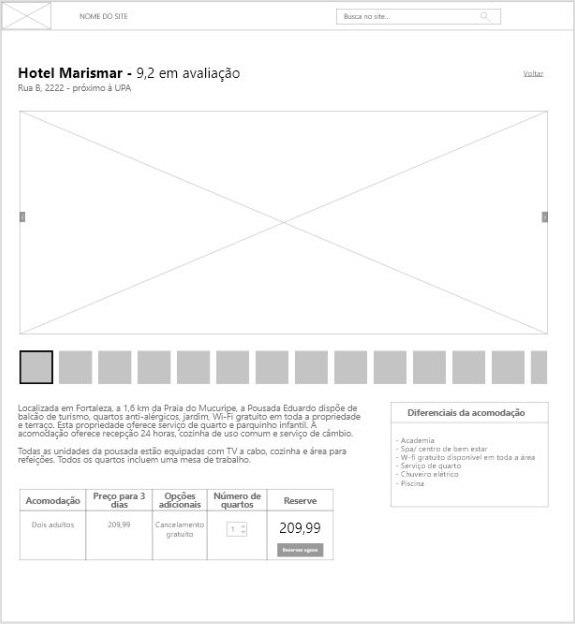

Reserva
Exemplo do padrão reserva.
Informações
Os usuários desejam reservar um voo/hotel/carro/...
Permita que os usuários pesquisem o "objeto" de maneira flexível, principalmente em relação à data/hora versus preço. Em seguida, permita que isso faça a reserva real.
A reserva de um voo/carro/férias é uma estrutura muito semelhante a outras atividades de compra ou compra on-line. Consiste em duas etapas de alto nível:
- Determinando o item para reservar/comprar usando um processo semelhante a uma pesquisa.
- Passando pelo processo de compra dos itens selecionados.
A parte mais complicada da reserva é a busca e a seleção do item. Em muitos casos, como em um site de viagens , você encontrará uma caixa contendo algumas variações na Pesquisa avançada na página inicial. Esse formulário é o início de uma série de etapas que os usuários devem seguir usando um Assistente:
As etapas básicas são:
- Seleção inicial: Os usuários podem restringir suas preferências por datas, preços, tipo de tarifa (se aplicável), tipo de transporte e número de pessoas.
- Realize uma pesquisa no banco de dados: Os usuários verão uma Página de Processamento enquanto o sistema estiver pesquisando, porque geralmente leva muito tempo para que a pesquisa seja concluída.
- Mostre os resultados: Os resultados são basicamente um caso especial de Resultados da Pesquisa. O principal problema aqui é como lidar com a combinação de datas e preços. Uma abordagem é pesquisar principalmente a data ou o preço conforme o usuário solicitar. Outra abordagem não é pedir ao usuário o tipo de pesquisa definido primeiro, mas sim combinar preço e datas. Principalmente os resultados são classificados por data, mas com uma indicação dos preços. Por exemplo, usando código de cores. Limite primeiro as datas e depois os preços. Existem várias maneiras de lidar com a combinação de preços e datas, por exemplo, usando vistas de um ou calendário com código de cores.
- Ver seleção: Opcionalmente, dê um passo atrás. Veja a data, hora, preço, números de voo, etc.
- Realizar a compra: O restante é apenas um processo de compra, assim como ao usar um carrinho de compras.
A combinação de preço e "ajuste" às datas ou preferências solicitadas é a base sobre a qual os usuários precisam tomar uma decisão. Principalmente, eles querem um ajuste exato ao pedido com o menor preço possível. Como esse raramente é o caso, eles devem equilibrar as outras opções. Como visualizar isso é um problema difícil e ainda não se sabe qual é a melhor solução, pelo menos ainda.